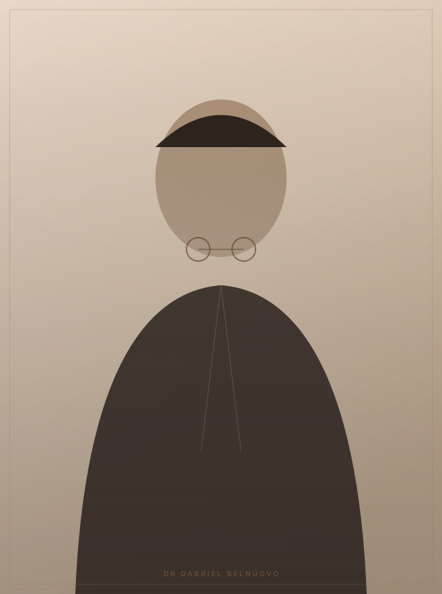
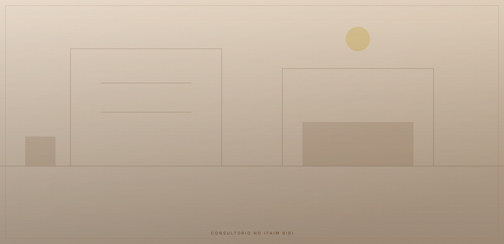
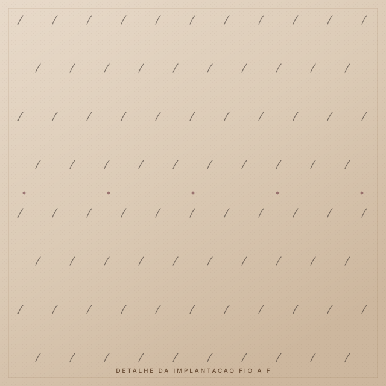
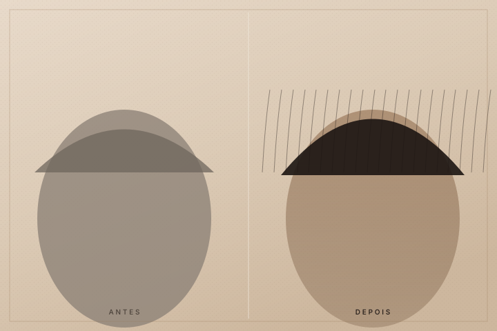
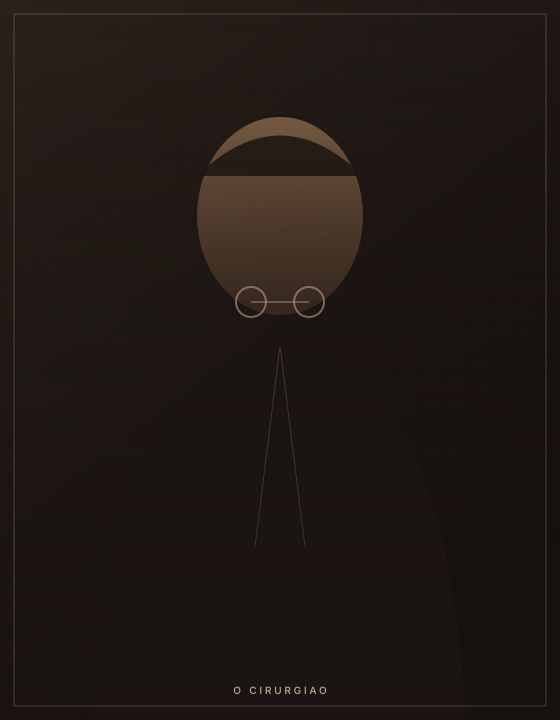

Naturalidade
Linha frontal desenhada a partir das suas proporções, com bordas irregulares de propósito. É a irregularidade que engana o olho, não a densidade.
Dr. Gabriel Belnuovo CRM-SP 216712 Itaim Bibi, São Paulo
O melhor transplante capilar é o que não se anuncia. Nenhuma linha reta demais, nenhuma falha na coroa, nenhum período em que você precise se esconder. Só a sensação de ter voltado a parecer com quem você é.
Cirurgia conduzida do início ao fim pelo médico Um paciente por dia operatório, sem etapas delegadas a técnicos.

Linha frontal desenhada a partir das suas proporções, com bordas irregulares de propósito. É a irregularidade que engana o olho, não a densidade.
Técnica No Shave avaliada caso a caso, agenda fechada e retorno à rotina em poucos dias. A recuperação não precisa ser um anúncio.
Folículos retirados de área resistente à ação hormonal. Uma vez estabelecidos, crescem como cabelo seu, porque são.
O incômodo
Quem procura um transplante capilar raramente chega falando de folículos. Chega falando de situações. Ninguém decide operar por causa de um número no espelho: decide por causa de um acúmulo de pequenos momentos que passaram a exigir cálculo.
Nada disso é vaidade. É a distância entre como você se sente e o que o espelho devolve. E é uma distância que aumenta sozinha, porque a calvície androgenética é progressiva por definição.
O que se recupera em uma cirurgia bem feita não é volume. É o direito de não pensar nisso.
Discrição
Quase todo paciente pergunta a mesma coisa antes de perguntar sobre resultado: quanto tempo vou ficar com cara de quem fez. A resposta honesta é que depende do caso, mas o processo inteiro aqui foi organizado em torno dessa preocupação.
Em casos selecionados não é necessário raspar toda a cabeça. Avaliamos se o seu caso permite e dizemos com clareza quando não permite, em vez de vender a técnica como se servisse para todos.
A agenda fecha no seu nome. Não há sala ao lado, não há fila, não há troca de mãos no meio do procedimento.
A maioria volta a atividades administrativas entre o terceiro e o quinto dia. Emitimos atestado quando você precisar de cobertura formal.
Você manda foto, o médico responde. Sem central de atendimento intermediando a evolução do seu couro cabeludo.

Do cirurgião
Existe um número de fios que fica bem em você e um número que só fica bem no orçamento. Meu trabalho é dizer qual é qual, mesmo quando a resposta reduz o procedimento.
Dr. Gabriel Belnuovo — CRM-SP 216712
Critérios
Você provavelmente vai visitar mais de uma clínica. Estes são os quatro pontos em que os resultados se separam, e valem como pergunta em qualquer consulta, inclusive nesta.

Linha reta, simétrica, na mesma altura dos dois lados. Alta densidade concentrada na borda.
Borda irregular e propositalmente imperfeita, com fios únicos na frente e agrupamentos apenas atrás. Assimetria leve, como no cabelo que nunca foi operado.
Fios saindo perpendiculares ao couro cabeludo, todos na mesma direção, com aspecto de escova.
Ângulo agudo, acompanhando a direção original de cada região. É o detalhe mais trabalhoso da cirurgia e o mais difícil de corrigir depois.
Linha baixa e cheia aos 30 anos, desenhada para a foto de agora, que envelhece mal quando a queda ao redor avança.
Desenho que considera a doadora finita e a progressão futura da calvície, para continuar coerente aos 50.
Extração concentrada, deixando clareiras visíveis na nuca. Impede usar cabelo curto depois.
Extração distribuída, preservando densidade percebida. A nuca continua sendo uma opção de corte, não um problema a esconder.
Resultados
Fotografias sempre favorecem quem as tira. Por isso cada caso vem com a informação que costuma ser omitida: o intervalo entre as duas imagens e a área efetivamente tratada.

As imagens desta página são ilustrativas até a publicação do acervo fotográfico com autorização de uso de imagem dos pacientes. Resultados variam conforme a densidade da área doadora, o padrão de queda e as características individuais de cada caso.
O tempo
A biologia do folículo não negocia. Quem promete resultado final em semanas está vendendo, não explicando. Este é o calendário real, incluindo a fase que ninguém gosta de mencionar.
Marcação da linha com você acordado, em frente ao espelho. Anestesia local com sedação leve, pausas programadas. Você sai andando, no mesmo dia.
Retorno a atividades administrativas. Exercício de impacto, sauna, piscina e sol direto entram de forma progressiva, com orientação individual.
Os fios transplantados caem. Isso assusta quem não foi avisado e é completamente normal: o folículo permanece, o fio reinicia o ciclo. É a fase em que o acompanhamento importa mais.
Começa o crescimento, ainda fino e desigual. Aqui já é possível avaliar se o desenho está se comportando como planejado.
Espessura e densidade finais. É a partir desta data que faz sentido comparar fotos e, se for o caso, pedir um depoimento seu.
Vozes
Rodrigo M.38 anos. Linha frontal e têmporas, depoimento no oitavo mês.“Eu tinha medo de sair com cara de quem fez transplante. Passaram oito meses e ninguém no trabalho comentou nada. Só disseram que eu estava com outra aparência.”
Thiago A.44 anos. Coroa e meia cabeça, planejado em duas etapas.“Fiz três consultas antes. Foi a única em que o próprio médico me explicou o que não era possível fazer no meu caso.”
Marcelo P.35 anos. No Shave FUE, voltou ao escritório no quarto dia.“A parte que mais me surpreendeu foi o pós. Mandei foto toda semana e sempre tive resposta do próprio Dr. Gabriel.”
Depoimentos ilustrativos da estrutura desta página, a serem substituídos por relatos reais com autorização de uso de imagem e voz antes da publicação.

O cirurgião
Em clínicas de alto volume, o médico desenha a linha e deixa a sala. A extração e a implantação, que são as etapas que definem o resultado, ficam com técnicos. É a explicação mais comum para linhas artificiais e densidade irregular.
O Dr. Gabriel Belnuovo trabalha no modelo oposto: um paciente por dia operatório, com o próprio cirurgião executando o desenho, a extração e a implantação, apoiado por equipe de enfermagem. É mais lento e limita a agenda. É também o que permite responder pelo resultado.
Perguntas
Para os fios transplantados, sim. Eles vêm de uma área geneticamente resistente à ação hormonal, normalmente nuca e laterais, e seguem crescendo pela vida. O que continua evoluindo é a queda dos fios originais ao redor, e é por isso que o planejamento precisa considerar a progressão futura, não apenas a situação de hoje.
Depende da área a cobrir, da densidade e da qualidade da sua doadora e da densidade final desejada. Qualquer número dado por telefone, antes de examinar o couro cabeludo, é estimativa comercial. O seu número sai da consulta, com tricoscopia e medição da área doadora.
A técnica FUE não usa corte linear, então não existe a cicatriz em faixa das técnicas antigas. A extração deixa micropontos na doadora, que cicatrizam em poucos dias e ficam imperceptíveis a olho nu. Quando a extração é bem distribuída, cabelo curto continua sendo uma opção.
O desconforto se concentra nos poucos minutos da aplicação da anestesia local. Depois disso, com sedação leve, você passa as horas seguintes acordado e confortável, com pausas programadas para se alimentar e ir ao banheiro.
A recomendação usual é reservar de três a cinco dias para atividades administrativas. Emitimos atestado quando necessário. Exercícios de alto impacto, natação, sauna e sol direto são liberados de forma progressiva no seu retorno.
Em geral a partir dos 25 anos, quando o padrão de queda já se mostra mais estável. Em pacientes mais jovens a avaliação é mais criteriosa, porque operar cedo demais produz um desenho que envelhece mal. Nesses casos, muitas vezes a conduta correta é estabilizar clinicamente primeiro.
Sim, em até 12x sem juros no cartão, além de outras condições apresentadas na consulta. O valor depende do número de unidades foliculares e da extensão da área tratada, por isso só é definido após a avaliação médica.
Sim. Exames laboratoriais são solicitados na consulta para garantir a segurança do procedimento, junto com a avaliação do seu histórico clínico e das medicações em uso.
O Dr. Gabriel Belnuovo, CRM-SP 216712, do início ao fim: desenho, extração e implantação, com apoio de equipe de enfermagem. Nenhuma dessas etapas é delegada, e é essa a diferença central em relação a clínicas em que o médico apenas supervisiona.
Você ouve isso na pré-avaliação, sem custo e antes de qualquer proposta. Doadora insuficiente, queda ativa não estabilizada ou expectativa incompatível com o que a técnica entrega são motivos legítimos para postergar ou não operar. Um não bem fundamentado é parte do serviço.
Próximo passo
É uma conversa. Você envia fotos pelo WhatsApp e recebe uma leitura inicial do seu caso: se há indicação, qual a ordem de grandeza do procedimento e o que resolver antes de vir ao consultório. Sem custo e sem compromisso de agendar nada depois.
(11) 98929-4956 · Resposta em horário comercial